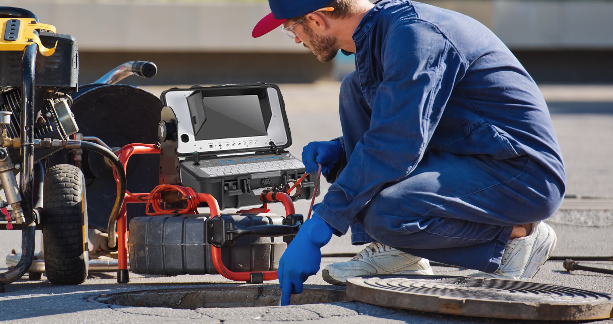
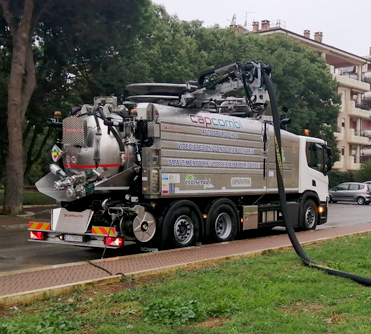

★★★★★
Azienda molto professionale ho richiesto lo spurgo di una fossa biologica e un sopralluogo per lo smaltimento di una canna fumaria in amianto grazie mille
Svuotamento pozzi neri e fosse biologiche, disostruzione di scarichi e fognature, videoispezione delle tubazioni. Più di 30 anni di esperienza, camion moderni, preventivo gratuito.
Compila i campi e continua su WhatsApp per richiedere il tuo preventivo.
Interveniamo su abitazioni, condomini, attività commerciali e aziende in tutta Napoli e provincia.
Svuotamento e pulizia di pozzi neri, fosse biologiche e vasche di raccolta con autospurgo, con smaltimento dei reflui.
Liberiamo scarichi, colonne e condotte fognarie intasate con attrezzature a pressione, per ripristinare subito il deflusso.
Pulizia periodica o straordinaria di caditoie, pozzetti, griglie e tubazioni di scarico per prevenire intasamenti e allagamenti.
Una telecamera all'interno della tubazione mostra la causa del problema: ostruzioni, rotture, radici, infiltrazioni.
Quando uno scarico si intasa di continuo o c'è un cattivo odore che non va via, serve capire la causa prima di intervenire. Con la videoispezione di tubazioni e fognature inseriamo una telecamera nella condotta e individuiamo il punto esatto del problema.

Tre passaggi, senza complicazioni.
Chiami, scrivi su WhatsApp o compili il modulo. Ci descrivi il problema e la zona.
Ti diciamo come interveniamo e quanto costa, prima di iniziare. Senza impegno.
Arriviamo con camion attrezzati e risolviamo il problema, a regola d'arte.
Quando gli scarichi defluiscono lentamente, una fognatura è ostruita o una fossa biologica deve essere svuotata, serve un intervento mirato. Con i nostri camion moderni eseguiamo lo spurgo di pozzi neri e fosse biologiche e la pulizia delle condotte, per rimuovere i materiali accumulati e favorire il corretto deflusso.

Non trovi il tuo comune? Interveniamo in tutta la provincia di Napoli: chiamaci.
Azienda molto professionale ho richiesto lo spurgo di una fossa biologica e un sopralluogo per lo smaltimento di una canna fumaria in amianto grazie mille
Azienda seria e preparata, abbiamo fissato un appuntamento per lo spurgo di una fossa biologica e videoispezione di alcune tubazioni, molto competenti li consiglio
Bravissimi! Ottimo lavoro di disinfestazione e video ispezione delle tubature di casa. Super consigliati.
Il prezzo dipende dal tipo di intervento, dalla quantità da svuotare e dalla difficoltà di accesso. Per questo offriamo un preventivo gratuito e senza impegno: ci descrivi la situazione e ti diciamo il costo prima di iniziare.
Lavoriamo in tutta Napoli e provincia. Se non vedi il tuo comune nell'elenco, chiamaci o scrivici su WhatsApp e ti confermiamo la disponibilità.
È un controllo con telecamera all'interno di scarichi e fognature. Serve quando gli intasamenti si ripetono, quando ci sono cattivi odori o infiltrazioni, o prima di lavori e compravendite, per conoscere lo stato reale delle condotte.
Dipende dalle dimensioni della fossa e da quante persone la usano. In generale è bene far controllare l'impianto con regolarità, per evitare tracimazioni e cattivi odori. Se hai dubbi, ti consigliamo noi in base al tuo caso.
Sì, interveniamo per abitazioni private, condomini, attività commerciali e aziende.
Chiamaci o scrivici: ti diamo un preventivo gratuito.